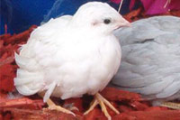

Природная форма (Normal Wild type)
Петушок коричневого цвета, на груди черно-белый рисунок, чередующимися полукругами, грудь серо-голубая, нижняя и задняя часть - красные. Курица коричневая, с пестрым рисунком.

|
|
 Самец Самец |
 Самка Самка |
Почему окрасов больше, чем мутаций? Смотреть все виды окрасов
Серебристая мутация (Silver)
Мутация рецессивная. (что означает этот термин?)
| Петушок |
Курочка |
Синеголовая мутация (Blue Face)
Мутация доминантная. (что означает этот термин?)
| Петушок |
Курочка |
Золотой жемчуг (Golden Pearl)
Мутация доминантная.
В гомозиготном состоянии мутация считается летальной. Самец похож на природного, отличается узором на спине и белой отметиной над клювом. Самка отличается от природной другим видом узора на пестрых перьях
| Петушок |
Курочка |
Белая мутация (White)
Мутация рецессивная.
Возможность маскировки всех цветов.
|  | |
| Петушок |
Курочка |
Вариации мутаций по чередованию окраса и белых пятен.
Различают несколько типов пестроты, по видимому, с разным генетическим механизмом.
Пестрые мутации сочетаются с разными цветовыми вариациями птиц, таким образом получается много новых окрасов.
Мутация пестрая (pied)
по видимому, доминантный над природным окрасом - комбинация окрашенных участков и участков белых перьев не упорядоченного размера и расположения.
В примере ниже - синеголовый осветленный пестрый самец и природная пестрая самка.
Другие сочетания пестрой мутации с различными окрасами
| Петушок |
Курочка |
Мутация смокинговая (Toxedo)
предположительно рецессивная - окрашенная спина и верхняя часть головы, белые крылья, лицо, грудь, живот с четкой и относительно прямой границей между цветами.
Мутация пятнистая (Splash)
У российских заводчиков таких птиц пока нет, генетический механизм данной мутации в России пока не известен.
Мутация белых маховых перьев (White winged pied)
Материалы подготовлены:
Михаил, Москва. drugbest(собака)mail.ru
Елена Ночь, Москва. nocch@ya
На фото представлены птицы владельцев:
Михаил, Москва.
Елена Ночь, Москва
А также материалы из интернета по следующим ссылкам:
zebrafinch.com phils-bestbuttonquail aussiefinchforum.net jennysbirds.com themadhouseartists.com http://cspotsminiaturehorses.homestead.com/homepageminis.html http://www.ebay.com/ http://www.wildabouttheworld.com/